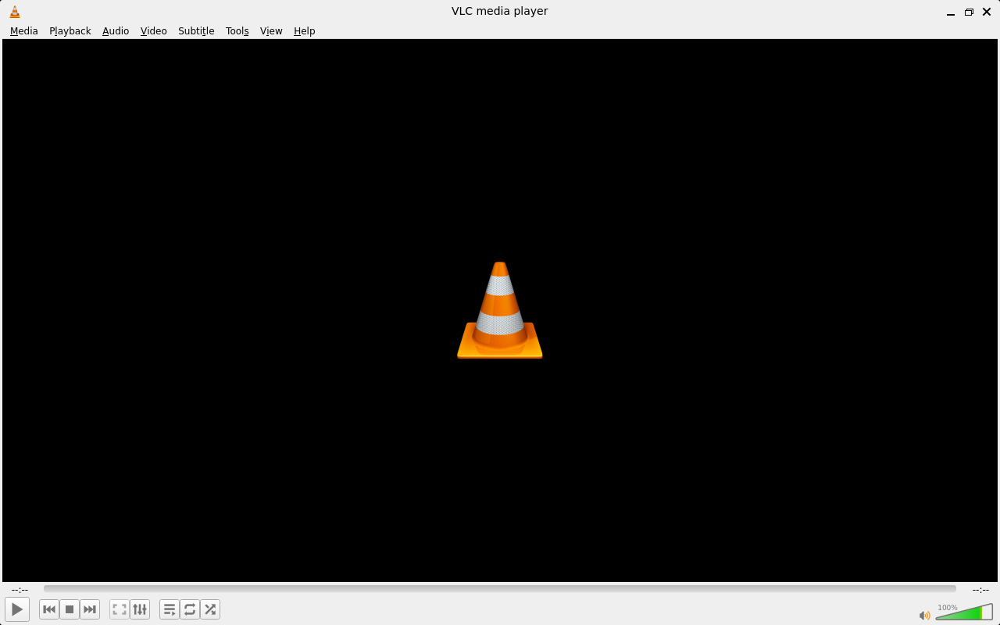
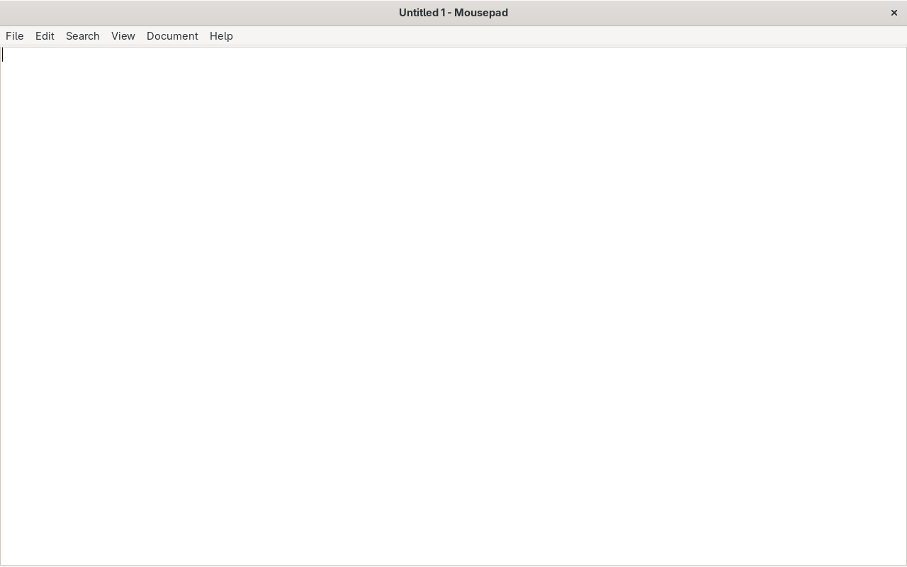
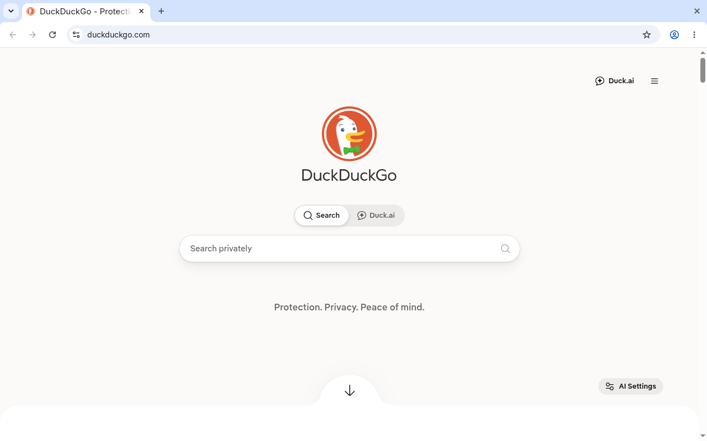

“The computer was conceived as a dedicated machine of logic. The modern desktop made it an erratic, decaying bureaucrat. KUROGANE is the return to the iron plate.” Axiom of the Kurogane Project • Autumn 2026
Arcade Boards
for Operating Systems.
The modern desktop is a decaying state machine.
Booting a contemporary desktop operating system on consumer silicon is an exercise in structural degradation. Over eighty background surveillance and telemetry daemons awaken before the user requests a single instruction; three to four gigabytes of volatile memory vanish into session brokers, update checkers, and indexing engines; and spinning hard drives or low-cost flash storage thrash for minutes before drawing a cursor.
Windows 11 Home clean boot allocates ~3,400MB RAM and triggers 84 background tasks before launching an unprivileged process. Ubuntu 24.04 desktop allocates ~1,850MB under systemd userspace targets.
The foundational failure of modern desktop computing is mutability. Operating systems treat their own root filesystems as scratchpads: package managers unpack files into shared system paths, dynamic registries accumulate unresolvable keys, and unprivileged background updates lock package databases. When power is interrupted mid-write, or an update encounters an incompatible dependency, the machine decays into an irrecoverable state.
This structural decay has turned millions of perfectly capable dual-core and quad-core laptops into artificial electronic landfill. Silicon does not wear out from reading logic. It is strangled by the endless accumulation of mutable state.
The appliance as an immutable iron board.
An arcade cabinet does not boot a general-purpose operating system. It does not ask the player to configure audio drivers, wait for background telemetry to report, or install security patches before rendering a frame. The machine is turned on with a physical power switch; the hardware mounts a dedicated, read-only ROM board; and the system immediately executes its solitary purpose at bare-metal speeds.
The Enhanced Read-Only File System (EROFS) maps compressed blocks directly into the Linux page cache via the kernel block layer. Userspace FUSE context switches are completely eliminated. Read bandwidth exceeds uncompressed ext4 on identical flash storage.
KUROGANE (黒鉄) translates the arcade cabinet model to modern personal computing. Operating systems were meant to serve software, not monopolize silicon. In KUROGANE, software is compiled into declarative, immutable EROFS arcade boards hosted on a single, shared, unyielding Linux 6.12+ kernel.
Every appliance is an unalterable block payload. Pull the USB drive, cut the power switch, or execute destructive commands inside the root shell: the iron plate cannot degrade. Every reboot restores factory perfection from identical immutable blocks.
Principles of the Kurogane Architecture.
Play Without Fear.
The root filesystem is 100% read-only EROFS. Run rm -rf --no-preserve-root / as root, kill critical processes, or physically rip the boot drive from the USB bus mid-execution. You cannot brick the system. Every boot restores factory perfection. User documents, repositories, and configurations are strictly isolated to an ext4 partition mounted at /data.
The 15-Line Declarative Formula.
No multi-thousand-line shell setup scripts or fragile container orchestrators. Every appliance is declared in 15 lines of plain YAML. Kurogane parses dependencies, compiles the environment rootlessly without root privileges or Docker daemons, and outputs a single EROFS block image.
Silence the Daemons.
No systemd userspace targets. No Polkit. Zero background audio servers (no PulseAudio or PipeWire running inside appliances). Direct kernel DRM/KMS hardware acceleration and universal ALSA dmix provide multi-stream hardware audio multiplexing with zero background memory overhead.
Curated exhibition of arcade appliances.
The following plates record real execution captures and declarations of Kurogane arcade boards running on bare-metal and hardware-accelerated QEMU/KVM virtual silicon.

/init.d/ stage sequencing to active Wayland prompt in 1.8 seconds. Rootfs mounted 100% read-only via EROFS.
$ git clone https://github.com/devpryan7792/kurogane.git && cd kurogane
$ ./kurogane run recipes/terminal-foot.yaml

cage kiosk driving the GPU-accelerated foot terminal directly over kernel DRM/KMS. Persistent Git dotfiles and source trees preserved on /data.
appliance: name: foot version: "1.0.0" runtime: engine: arch packages: [foot, cage, seatd] display: compositor: cage entrypoint: /usr/bin/foot storage: mode: persistent mount_point: /data

appliance: name: vlc version: "1.0.0" runtime: engine: arch packages: [vlc, cage, seatd, alsa-utils] display: compositor: cage entrypoint: /usr/bin/vlc storage: mode: persistent

appliance: name: mousepad version: "1.0.0" runtime: engine: alpine packages: [mousepad, cage, seatd] display: compositor: cage entrypoint: /usr/bin/mousepad

appliance: name: chromium version: "1.0.0" runtime: engine: arch packages: [chromium, cage, seatd] display: compositor: cage entrypoint: /usr/bin/chromium storage: mode: ephemeral
Monotonic benchmark measurements.
Measurements recorded via high-resolution monotonic kernel timestamps inside QEMU/KVM under identical hardware allocations (1024MB RAM, 2 Cores). Zero marketing embellishment.
| APPLIANCE / SYSTEM | CORE ENGINE | COLD BOOT | IDLE MEMORY | ROOTFS ARCHITECTURE | STATE CORRUPTION RISK |
|---|---|---|---|---|---|
| Kurogane Mousepad | Alpine musl | 2.1s | 57.6 MB | 100% Read-Only EROFS | Zero (Stateless) |
| Kurogane Foot | Arch Linux | 1.8s | 85.0 MB | 100% Read-Only EROFS | Zero (Stateless) |
| Kurogane VLC | Arch Linux | 2.8s | 340 MB | 100% Read-Only EROFS | Zero (Stateless) |
| Ubuntu 24.04 LTS | glibc / systemd | 18.5s | 1,850 MB | Mutable ext4 | High (Package Rot) |
| Windows 11 Home | NT Kernel | 35.0s+ | 3,400 MB | Mutable NTFS | Critical (Registry Decay) |
Open architectural roadmap.
KUROGANE is built by an open collective of systems programmers. Adding an appliance board requires zero kernel programming—only a 15-line declarative YAML specification. The following Requests for Comments and initial appliances are open on GitHub: